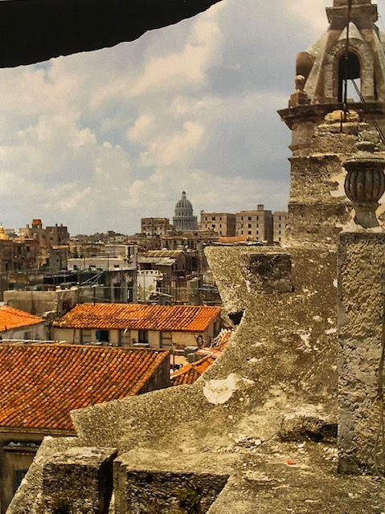
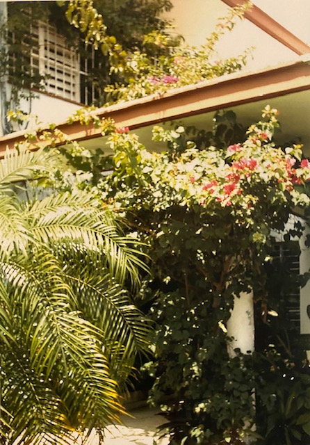
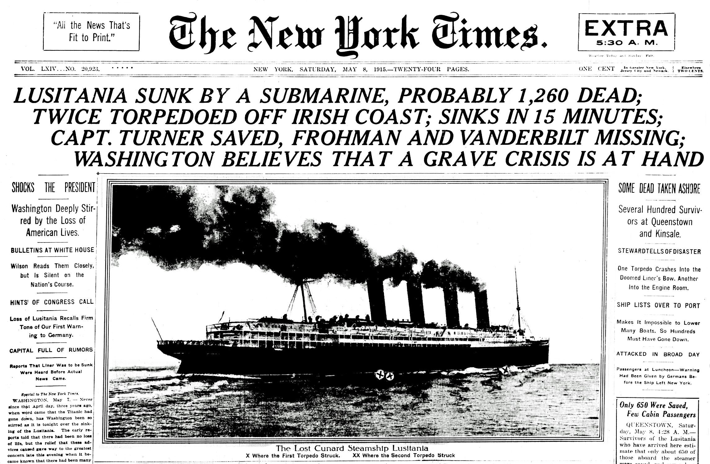

patowmack divers
The club will have its annual holiday party with Yankee swap, food, and merriment.
Eric will show pictures from Discover the Sea, which is a shipwreck museum on Fenwick Island, Delaware. We are not allowed to show pictures on social media, but Eric will show pictures of relics from the 1622 Spanish Fleet (Nuestra Senora de Atocha), the Faithful Steward (an immigrant ship that sank in 1785), Nuestra Senora De La Concepcion (1641), the Quicksilver Galleons, unnamed ships that sank near Hoi An, Vietnam, the SS Republic, and more.
Since Monday, July 4 is a holiday, we will meet Monday, July 11
St. Lucia…Several club members will share pictures from dives in St. Lucia. It's a wonderful dive site that can be overlooked on the way to other islands in the Caribbean. 7:30pm at Mylo’s Grill and online at Zoom.
Bonaire…Jeff will show videos from his recent dive trip to Bonaire. 7:30pm at Mylo’s Grill and online at Zoom. 
West Palm Beach Paul, Bruce, Inia, Kris and Eric will share pictures from their February trip to go shore diving at the Blue Heron Bridge just north of West Palm Beach. 7:30pm at Mylo’s Grill and online at Zoom.
Blackwater diving…you know you’re intrigued… Join us for the Monday March 7th club meeting to hear more about it. 7:30pm at Mylo’s Grill and online at Zoom.
Following club business, Anne will show pictures from her trip to Cuba.
  
Following club business, Andrew will show pictures and describe his 2021 dive on the Lusitania! The British liner was sunk by a German U-boat on May 7, 1915 about 11 miles off the cost of Ireland with the loss of more than 1100 lives. There is a continuing controversy whether or not the Lusitania was carrying arms to Great Britian, which would have made it a fair target. Today, it rests in 305 feet of water.

Source: New York Times, May 8, 1915. Public domain from Wikipedia.

 Follow us on Facebook!
or email us at "dive at patowmackdivers.com" replace at with @
Follow us on Facebook!
or email us at "dive at patowmackdivers.com" replace at with @
Copyright (c) 2011-2023 Patowmack Divers.com. All rights reserved.